Listening visuals Cambridge 8Reviewed results: 122 confirmed issue records (86 duplicate pairs, 9 sequence inversions, 1 wrong-Part image, 26 clipped images); 23 suspected records. Counts overlap Parts/assets. Full reviewed CSV. Raw audit.json/findings.csv are detector output, not the final defect list. Fallback scope alone is not a defect. OCR ranges are incomplete hints.
All books · Cambridge 8: 16 Parts · exact current resolver outputCambridge 08 / Test 1 / Part 1
V0133:confirmed:duplicate_content
Q[1, 2]: 1, 2, 3 [Part fallback]
Q[3, 10]: 1, 2, 3
#1 OCR Q[[1, 10]] · 1928×2730
Test_1_Section_1_PDF_009.png
assets/public/c3ff82fad967ec0476ac5efed57bd3ca26c1f9f1e3cf54f17413135d8fd8f391.png
asset-c3ff82fad967ec0476ac5efed57bd3ca26c1f9f1e3cf54f17413135d8fd8f391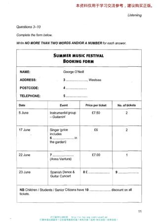
#2 OCR Q[[3, 10]] · 1928×2730
Test_1_Section_1_PDF_010.png
assets/public/91ba6a4bd5b7ee1fb8e4912bbb23cf8399af1c8d43f7c3be8eaef13e6b48513e.png
asset-91ba6a4bd5b7ee1fb8e4912bbb23cf8399af1c8d43f7c3be8eaef13e6b48513e#3 OCR Q[] · 1658×1801
Test_1_Section_1_Summer_Music_Festival_Booking_Form.png
assets/public/5a94b2e109e1e09a0e99fe3f2671d3cf6b6841a99dd1f6345531b24d6e19fa20.png
asset-5a94b2e109e1e09a0e99fe3f2671d3cf6b6841a99dd1f6345531b24d6e19fa20 Cambridge 08 / Test 1 / Part 2
No confirmed/candidate defect detected; not a visual PASS
Q[11, 15]: 1, 2 [Part fallback]
Q[16, 18]: 1, 2 [Part fallback]
Q[19, 20]: 1, 2 [Part fallback]
#1 OCR Q[[11, 20], [11, 15], [16, 18]] · 1928×2730
Test_1_Section_2_PDF_011.png
assets/public/70d249cfaab68fbdd79843d3bdfdb13fc555575e45f2a3837d1b1c56aae93ddb.png
asset-70d249cfaab68fbdd79843d3bdfdb13fc555575e45f2a3837d1b1c56aae93ddb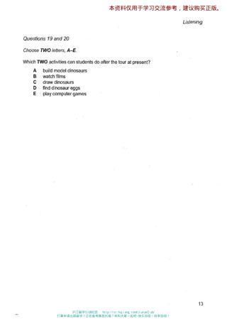
#2 OCR Q[] · 1928×2730
Test_1_Section_2_PDF_012.png
assets/public/8ec70fb94a322b6a4d516eeaa4273586fd675612d0d828e5f8a3e320dcfc2201.png
asset-8ec70fb94a322b6a4d516eeaa4273586fd675612d0d828e5f8a3e320dcfc2201 Cambridge 08 / Test 1 / Part 3
No confirmed/candidate defect detected; not a visual PASS
Q[21, 24]: 1, 2 [Part fallback]
Q[25, 27]: 1, 2 [Part fallback]
Q[28, 30]: 1, 2 [Part fallback]
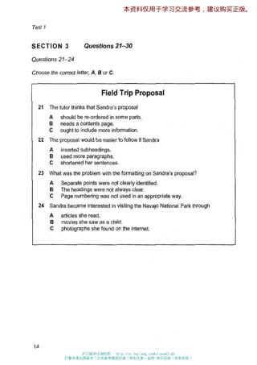
#1 OCR Q[[21, 30], [21, 24]] · 1928×2730
Test_1_Section_3_PDF_013.png
assets/public/4eea84dd076b92b700e5e936ad45174ce2c3e039c745e5a662dcada3780ee741.png
asset-4eea84dd076b92b700e5e936ad45174ce2c3e039c745e5a662dcada3780ee741#2 OCR Q[[25, 27], [28, 30]] · 1928×2730
Test_1_Section_3_PDF_014.png
assets/public/a43b0b429c52dc7e7837dd2a81ff3125f875063d993aa62f986d5f3d5e1ce82e.png
asset-a43b0b429c52dc7e7837dd2a81ff3125f875063d993aa62f986d5f3d5e1ce82eCambridge 08 / Test 1 / Part 4
No confirmed/candidate defect detected; not a visual PASS
Q[31, 40]: 1, 2 [Part fallback]
#1 OCR Q[[31, 40]] · 1928×2730
Test_1_Section_4_PDF_015.png
assets/public/b809d6a3e472db36340048cbb75d333251d20fe3118f0ee39c2a27e13f6d8820.png
asset-b809d6a3e472db36340048cbb75d333251d20fe3118f0ee39c2a27e13f6d8820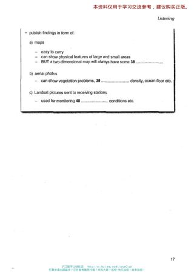
#2 OCR Q[] · 1928×2730
Test_1_Section_4_PDF_016.png
assets/public/853e3a2aa3312059e0ffb9b3322e4ced197b0b7c2ac4e9e58eabaa22cb98a0fd.png
asset-853e3a2aa3312059e0ffb9b3322e4ced197b0b7c2ac4e9e58eabaa22cb98a0fd Cambridge 08 / Test 2 / Part 1
V0142:confirmed:duplicate_content
Q[1, 3]: 1, 2, 3
Q[4, 10]: 1, 2, 3
#1 OCR Q[] · 1619×1502
Test_2_Section_1_Insurance_Damage_Table.png
assets/public/ae80a7acb7655b874693dde9e466b21723c24860e8b5bdafdb43df6173040fd8.png
asset-ae80a7acb7655b874693dde9e466b21723c24860e8b5bdafdb43df6173040fd8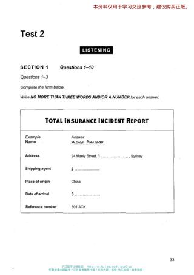
#2 OCR Q[[1, 10], [1, 3]] · 1928×2730
Test_2_Section_1_PDF_032.png
assets/public/028def577baf073853409b3e49311d878f4658dd99e053d61acc35942d87f651.png
asset-028def577baf073853409b3e49311d878f4658dd99e053d61acc35942d87f651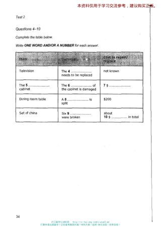
#3 OCR Q[[4, 10]] · 1928×2730
Test_2_Section_1_PDF_033.png
assets/public/6e5743b8cc2ff709113a27b4c56503a0e0f74cdf7d5b505c3979e5856d89b54e.png
asset-6e5743b8cc2ff709113a27b4c56503a0e0f74cdf7d5b505c3979e5856d89b54e Cambridge 08 / Test 2 / Part 2
No confirmed/candidate defect detected; not a visual PASS
Q[11, 11]: 1, 2, 3 [Part fallback]
Q[12, 14]: 1, 2, 3
Q[15, 20]: 1, 2, 3 [Part fallback]
#1 OCR Q[[12, 14]] · 1369×1665
Test_2_Section_2_Agricultural_Park_Map.png
assets/public/16111da9d9c4eec99f5ae3ddbc63c8728c768f1f4ff938276f6628ee94412f1f.png
asset-16111da9d9c4eec99f5ae3ddbc63c8728c768f1f4ff938276f6628ee94412f1f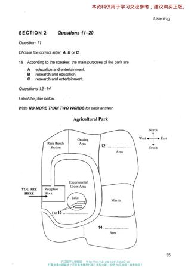
#2 OCR Q[[11, 20], [12, 14]] · 1928×2730
Test_2_Section_2_PDF_034.png
assets/public/e19b974bcd191abbd7e6f7f563a936053778b04c700cad1f9064384e4d824712.png
asset-e19b974bcd191abbd7e6f7f563a936053778b04c700cad1f9064384e4d824712#3 OCR Q[[15, 20]] · 1928×2730
Test_2_Section_2_PDF_035.png
assets/public/e0d8489890ff0b7991cd97bf003b9e8ff84f84c0d110883dc173372bc265369b.png
asset-e0d8489890ff0b7991cd97bf003b9e8ff84f84c0d110883dc173372bc265369b Cambridge 08 / Test 2 / Part 3
No confirmed/candidate defect detected; not a visual PASS
Q[21, 24]: 1, 2 [Part fallback]
Q[25, 30]: 1, 2 [Part fallback]
#1 OCR Q[[21, 30], [21, 24]] · 1928×2730
Test_2_Section_3_PDF_036.png
assets/public/d6724540a6a2990b6e8d2abbe61b070ab1ddf7aca9daa9eca83f1c100c6e340c.png
asset-d6724540a6a2990b6e8d2abbe61b070ab1ddf7aca9daa9eca83f1c100c6e340c#2 OCR Q[[25, 30]] · 1928×2730
Test_2_Section_3_PDF_037.png
assets/public/0863b178eb14f521c3f296035e555a5493c6c5571b3f22ad5e65c54912a63241.png
asset-0863b178eb14f521c3f296035e555a5493c6c5571b3f22ad5e65c54912a63241 Cambridge 08 / Test 2 / Part 4
No confirmed/candidate defect detected; not a visual PASS
Q[31, 36]: 1, 2 [Part fallback]
Q[37, 40]: 1, 2 [Part fallback]
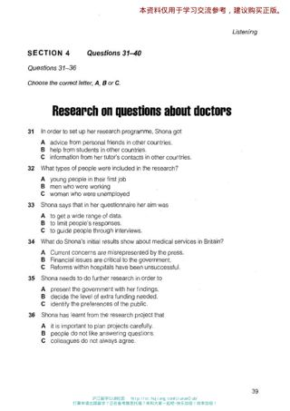
#1 OCR Q[[31, 40], [31, 36]] · 1928×2730
Test_2_Section_4_PDF_038.png
assets/public/3ae1b249261f640f9fd87f6db006b4bbaa501a841e4e4eaaa0f48f9d834bd23e.png
asset-3ae1b249261f640f9fd87f6db006b4bbaa501a841e4e4eaaa0f48f9d834bd23e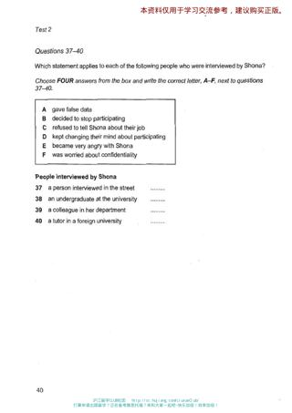
#2 OCR Q[[37, 40], [37, 40]] · 1928×2730
Test_2_Section_4_PDF_039.png
assets/public/1174cca9fed40e5c2ae55c3f777a78c3755d87a8d018e81441681121cccb3dd3.png
asset-1174cca9fed40e5c2ae55c3f777a78c3755d87a8d018e81441681121cccb3dd3Cambridge 08 / Test 3 / Part 1
V0150:confirmed:duplicate_content; C007:confirmed:clipped_source
Q[1, 3]: 1, 2, 3, 4
Q[4, 8]: 1, 2, 3, 4
Q[9, 10]: 1, 2, 3, 4 [Part fallback]
#1 OCR Q[[1, 10], [1, 3]] · 1928×2730
Test_3_Section_1_PDF_055.png
assets/public/b6e6f96e1f332d70f5b94d9cf7d8f3d0a4a595c9ad052dac3877ac8694229f87.png
asset-b6e6f96e1f332d70f5b94d9cf7d8f3d0a4a595c9ad052dac3877ac8694229f87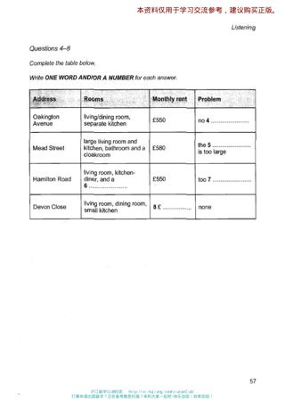
#2 OCR Q[[4, 8]] · 1928×2730
Test_3_Section_1_PDF_056.png
assets/public/c1a0f801298f2422058984c18336096fa41648b81aa927812fb881bb203d6015.png
asset-c1a0f801298f2422058984c18336096fa41648b81aa927812fb881bb203d6015#3 OCR Q[] · 1928×2730
Test_3_Section_1_PDF_057.png
assets/public/dc0a174a323f297d4ee38e4c7c13b1c17687dfd1aa8e76ca6344b81e3d33b0b3.png
asset-dc0a174a323f297d4ee38e4c7c13b1c17687dfd1aa8e76ca6344b81e3d33b0b3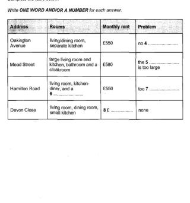
#4 OCR Q[] · 1659×1775
Test_3_Section_1_Rented_Properties_Table.png
assets/public/4424be7f7f752dbf4abc6ac5fc88b3fd57c181b0d874edbe8bb6ca06f520c7bc.png
asset-4424be7f7f752dbf4abc6ac5fc88b3fd57c181b0d874edbe8bb6ca06f520c7bc Cambridge 08 / Test 3 / Part 2
V0152:confirmed:duplicate_content
Q[11, 16]: 1, 2, 3 [Part fallback]
Q[17, 20]: 1, 2, 3
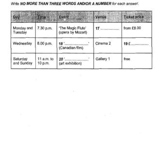
#1 OCR Q[] · 1678×1611
Test_3_Section_2_National_Arts_Centre_Events_Table.png
assets/public/d70ec290b61b4894ad2f07ac5d8ce193da291b6765dd809a4e49d527e0f1f488.png
asset-d70ec290b61b4894ad2f07ac5d8ce193da291b6765dd809a4e49d527e0f1f488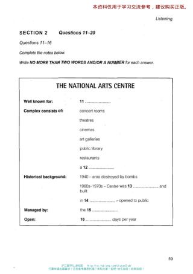
#2 OCR Q[[11, 20]] · 1928×2730
Test_3_Section_2_PDF_058.png
assets/public/bb408ea9727f85aff70aa26c1da8c16a7cc3fa9bc3671192b54c831edc7b14fe.png
asset-bb408ea9727f85aff70aa26c1da8c16a7cc3fa9bc3671192b54c831edc7b14fe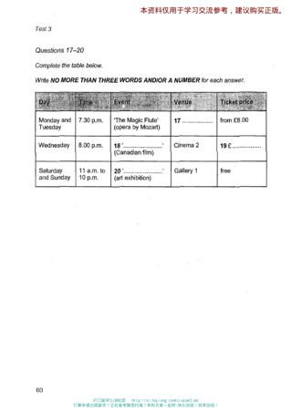
#3 OCR Q[[17, 20]] · 1928×2730
Test_3_Section_2_PDF_059.png
assets/public/638515a53f20af17e124abc1a3302101f73062e8d748dff2a89b4710d648a36c.png
asset-638515a53f20af17e124abc1a3302101f73062e8d748dff2a89b4710d648a36cCambridge 08 / Test 3 / Part 3
No confirmed/candidate defect detected; not a visual PASS
Q[21, 26]: 1, 2 [Part fallback]
Q[27, 30]: 1, 2 [Part fallback]
#1 OCR Q[[21, 30], [21, 26]] · 1928×2730
Test_3_Section_3_PDF_060.png
assets/public/b6cc69dc513ea5cad2c5d09579446c217bbe276d46fcdc34f82c458eb2812702.png
asset-b6cc69dc513ea5cad2c5d09579446c217bbe276d46fcdc34f82c458eb2812702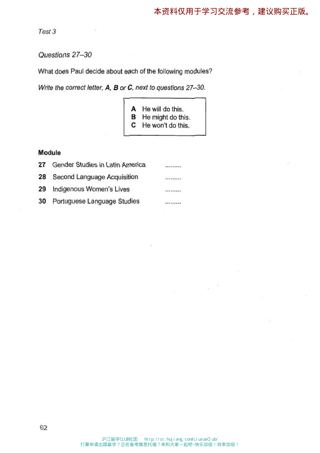
#2 OCR Q[[27, 30], [27, 30]] · 1928×2730
Test_3_Section_3_PDF_061.png
assets/public/86673bec815ed72c553bb6c62672ab3dafcd50f3b18b2e86a6be608a938828ae.png
asset-86673bec815ed72c553bb6c62672ab3dafcd50f3b18b2e86a6be608a938828ae Cambridge 08 / Test 3 / Part 4
No confirmed/candidate defect detected; not a visual PASS
Q[31, 34]: 1, 2 [Part fallback]
Q[35, 40]: 1, 2 [Part fallback]
#1 OCR Q[[31, 40], [31, 34]] · 1928×2730
Test_3_Section_4_PDF_062.png
assets/public/7e181de3963b28e0758a6d7d0ef14fd1e9bbfc2d120f547f91743c5620759baa.png
asset-7e181de3963b28e0758a6d7d0ef14fd1e9bbfc2d120f547f91743c5620759baa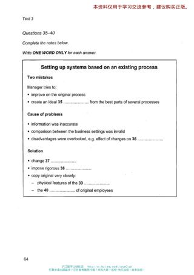
#2 OCR Q[[35, 40]] · 1928×2730
Test_3_Section_4_PDF_063.png
assets/public/213a607bdbe5d3e649ebda15f02744ba77829d7a61275d8552cec74658d9a007.png
asset-213a607bdbe5d3e649ebda15f02744ba77829d7a61275d8552cec74658d9a007 Cambridge 08 / Test 4 / Part 1
No confirmed/candidate defect detected; not a visual PASS
Q[1, 10]: 1 [Part fallback]
#1 OCR Q[[1, 10]] · 1928×2730
Test_4_Section_1_PDF_080.png
assets/public/8ab56d934d980c3a1af7ff1d1c21bde4fd3e011445a69c0164a63e9a8ef75c2b.png
asset-8ab56d934d980c3a1af7ff1d1c21bde4fd3e011445a69c0164a63e9a8ef75c2b Cambridge 08 / Test 4 / Part 2
V0159:confirmed:duplicate_content
Q[11, 13]: 1, 2, 3 [Part fallback]
Q[14, 20]: 1, 2, 3
#1 OCR Q[[11, 20], [11, 13]] · 1428×2022
Test_4_Section_2_PDF_081.png
assets/public/1a9c390695b0913cf0740420d060df0d87ba0231311369ecc0d6445c51080fad.png
asset-1a9c390695b0913cf0740420d060df0d87ba0231311369ecc0d6445c51080fad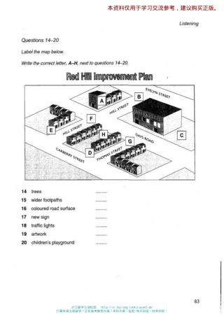
#2 OCR Q[[14, 20], [14, 20]] · 1428×2022
Test_4_Section_2_PDF_082.png
assets/public/3178707596fe8f7cdad3ad479feabf23dc6a7444d8a2ec036317816ec5254650.png
asset-3178707596fe8f7cdad3ad479feabf23dc6a7444d8a2ec036317816ec5254650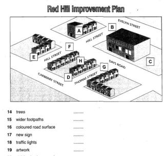
#3 OCR Q[] · 1171×1112
Test_4_Section_2_Red_Hill_Improvement_Plan.png
assets/public/f08cccab935f1deeafcfabd9afe64c5951145040b48144726dfd60c4da3cf698.png
asset-f08cccab935f1deeafcfabd9afe64c5951145040b48144726dfd60c4da3cf698 Cambridge 08 / Test 4 / Part 3
V0161:confirmed:duplicate_content
Q[21, 22]: 1, 2, 3 [Part fallback]
Q[23, 24]: 1, 2, 3 [Part fallback]
Q[25, 26]: 1, 2, 3 [Part fallback]
Q[27, 30]: 1, 2, 3
#1 OCR Q[] · 1114×1193
Test_4_Section_3_Exam_Preparation_Flowchart.png
assets/public/c2b7cfc4417d2efffb880569addc95a5120f34a9a610ace1ed2b26bf306c77d1.png
asset-c2b7cfc4417d2efffb880569addc95a5120f34a9a610ace1ed2b26bf306c77d1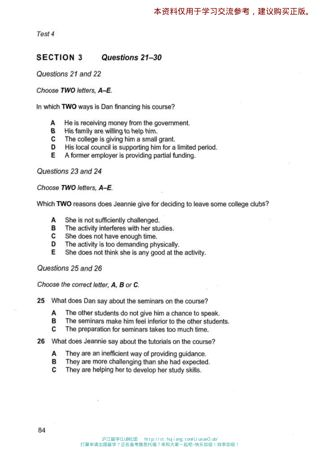
#2 OCR Q[[21, 30]] · 1428×2022
Test_4_Section_3_PDF_083.png
assets/public/d6945092111c4e01f9b825c1d3ad4b1411acb98dfbb2212b366fbf424527e355.png
asset-d6945092111c4e01f9b825c1d3ad4b1411acb98dfbb2212b366fbf424527e355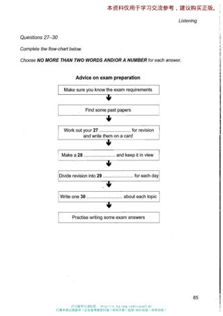
#3 OCR Q[[27, 30]] · 1428×2022
Test_4_Section_3_PDF_084.png
assets/public/30cacbb0e9648ba154c1279f2f0d37228f08947e04fb8a9ece20c911c3b9ade0.png
asset-30cacbb0e9648ba154c1279f2f0d37228f08947e04fb8a9ece20c911c3b9ade0 Cambridge 08 / Test 4 / Part 4
No confirmed/candidate defect detected; not a visual PASS
Q[31, 36]: 1, 2 [Part fallback]
Q[37, 40]: 1, 2 [Part fallback]
#1 OCR Q[[31, 40], [31, 36], [31, 36]] · 1428×2022
Test_4_Section_4_PDF_085.png
assets/public/199a193fe8ec7ebce829af2fe5367e7fc73a24775df6673abaeb0dbb289c1d59.png
asset-199a193fe8ec7ebce829af2fe5367e7fc73a24775df6673abaeb0dbb289c1d59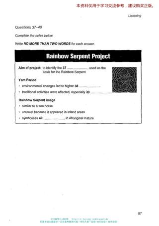
#2 OCR Q[] · 1428×2022
Test_4_Section_4_PDF_086.png
assets/public/eae182439414707c6a710c554c4f58d739621514f6a68d738da459867bc4a7c5.png
asset-eae182439414707c6a710c554c4f58d739621514f6a68d738da459867bc4a7c5